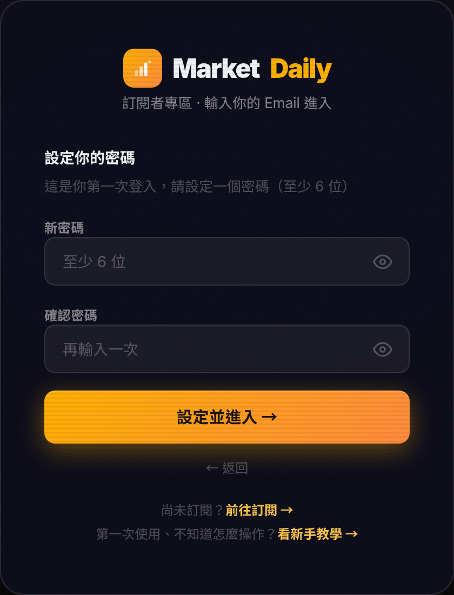
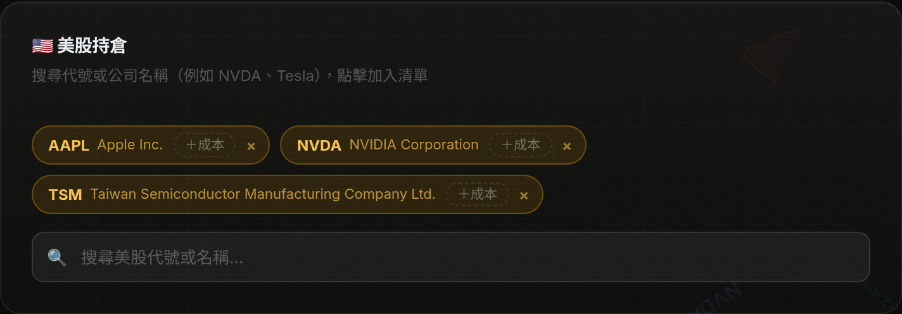

不用擔心,每一步都有圖片帶你做。
學會後,每天早上你的信箱就會收到股市報告。
打開 MarketDaily 首頁,在輸入框打上你的電子信箱(Email),按「繼續」。 接著畫面會請你選一個方案——選免費方案,就能每天收到股市報告。
現在去註冊 →
第一次登入時,網頁會請你設定一組密碼(至少 6 個字)。 設定好以後,以後每次登入都會用到這組密碼。
以後想看你的專區,點網站上的「我的專區」。 在登入畫面輸入你的Email 和剛剛設定的密碼,按「進入我的專區」就可以了。
前往登入 →
進入專區後,在持倉區的搜尋框打股票代號或公司名稱(例如「台積電」「NVDA」), 看到要的就點一下加入清單 —— 系統會自動儲存,不用按任何按鈕。 之後每天的報告,就會特別幫你分析這些股票。
去設定股票 →